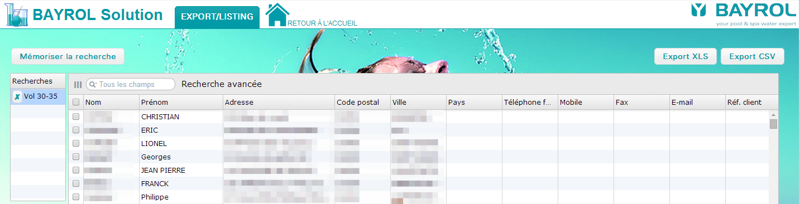
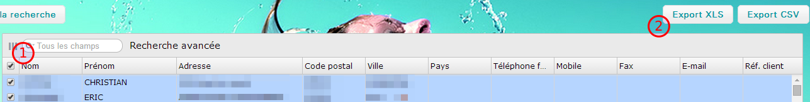

Cliquer dans le menu Outils > Exports / Listing pour accéder à l'écran de listing des clients.
Le champ de recherche permet de chercher sur la totalité des champs du tableau.
La recherche avancée permet de chercher précisément sur certains champs :
Pour exporter les enregistrements souhaités, sélectionner les lignes avec la boîte à cocher sur la gauche et cliquer sur « Export XLS » ou « Export CSV »
Il est possible de mémoriser les recherches en cliquant sur le bouton « Mémoriser la recherche ».
On pourra ensuite recharger ces recherches en double cliquant sur la ligne.
Pour supprimer une recherche mémorisée, cliquer sur le bouton « Supprimer » à côté du nom de la recherche